GM Ben Finegold's hour on rook-and-pawn and king-and-pawn endings: which pawns win, which only draw, and why grandmasters still blunder positions with three pieces on the board.
Watch on YouTubeFinegold opens not with a position but with a claim: getting good at the end of the game pays off more than almost anything else in chess. You win drawn endings, you draw lost ones, and a lot of that is just trying when your opponent has stopped. He also lays out why this is rook-and-pawn and king-and-pawn territory — those are the pieces that gain value once the board empties.
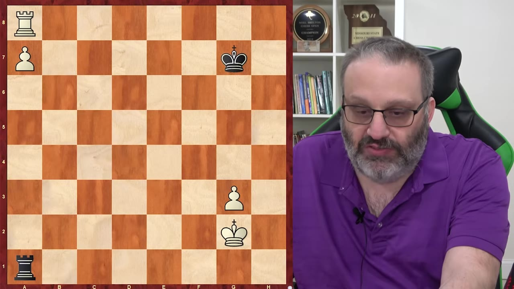
People at the end of a game — they don't want to play anymore. They're tired, they let their guard down, or they think a result is going to happen.— Ben Finegold
First three positions share a setup: white's a-pawn on the seventh, white rook trapped in front of it, plus a second pawn on the kingside. Black draws by shuffling — rook up and down the a-file, king between two squares. The one rule the defender must never break: keep the king on the second rank. Step onto the third rank and white checks, promotes, and wins the rook.
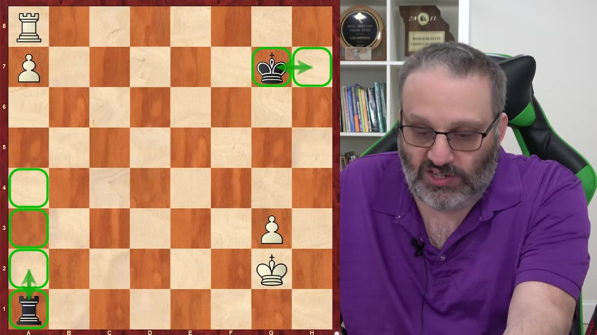
Move that second pawn one file in and the result flips. H-pawn draws, G-pawn draws — F-pawn wins. The mechanism: with the pawn on f6, all five of black's king moves lose, and blocking with the king lets the rook-swing-and-skewer go through. Finegold's larger point is for positions with more pawns still on: when both sides are trading down a kingside majority, white is angling to be left with an F-pawn and black is angling to deny it.
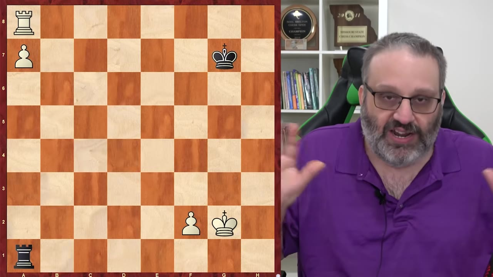
One of the biggest mistakes people make in chess is they take one idea and apply it to positions where the idea doesn't work.— Ben Finegold
Finegold builds a position with extra pawns to show how, without the plan, every reasonable-looking move loses half a point. The losing line: push the g-pawn, trade, and you've handed black a drawn G-pawn ending. The winning move is f5 first — keep the F-pawn. He also drives home where the rook belongs: behind the passed pawn. He'd given white two extra pawns and only drew half the time, purely because the white rook was parked on its worst square, in front, unable to move.
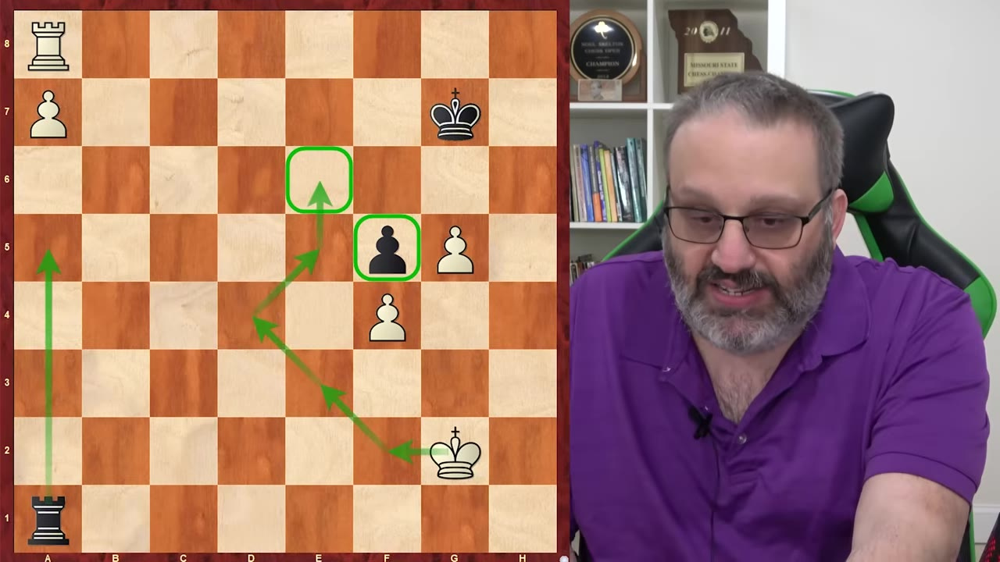
The defensive workhorse. One pawn, defender's king in front of it, but pushed back to the edge — the worst version of a drawn ending, and you'll lose it if you don't know the procedure. The move is Rb6: sit the rook on the third rank and stop the attacking king from advancing. When the pawn finally pushes to the sixth, drop the rook to the back rank and check from behind forever — the king has nowhere to hide.
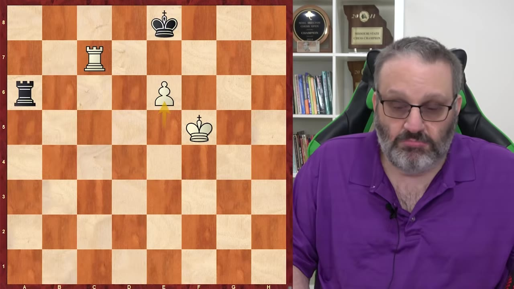
It actually has a name — it's called the Philadelphia position. And it's one of many Philadelphians.— Ben Finegold
Flip it: now the attacking king is in front of the pawn, and that's a win — a position known since the 1400s ("I don't mean rating, I mean the year"). The method is to check the defending king away, then lift the rook to the fourth rank so it can block the coming checks while the king walks out. That blocking lift is the "bridge."
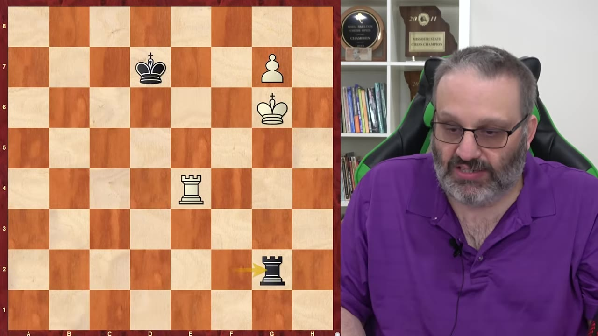
A real game — two pawns vs one, dead drawn. Finegold (White) just shuffles and hides his king from checks, then plays Kf5. His opponent, in time trouble, grabs the loose pawn with Rxg5 — the most obvious move on the board — and it loses. The winning resource is Rd8: black is in zugzwang, every rook move drops to g6+ and a back-rank mate. The game funnels into the Lucena position.
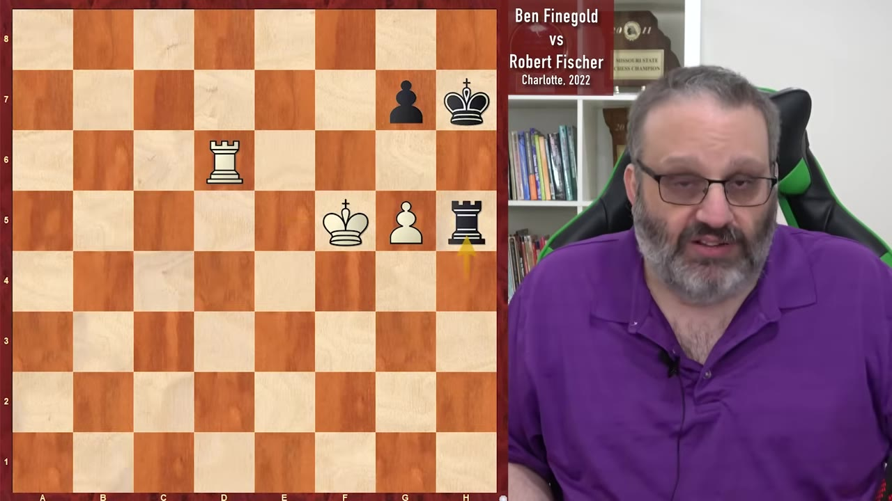
Grandmasters blunder all the time in these simple endgames because nothing is ever simple.— Ben Finegold
The foundation: don't push the pawn, march the king. If your king is two squares in front of your pawn, you win — regardless of whose move it is. He's been calling it the Feingold rule for 30 years "because the rule doesn't have a name." Then the puzzle: white to play and win with king and pawn vs king. The answer isn't to defend the pawn — it's to go around it (Kb2–a3–a4), outflanking the black king and seizing the opposition.
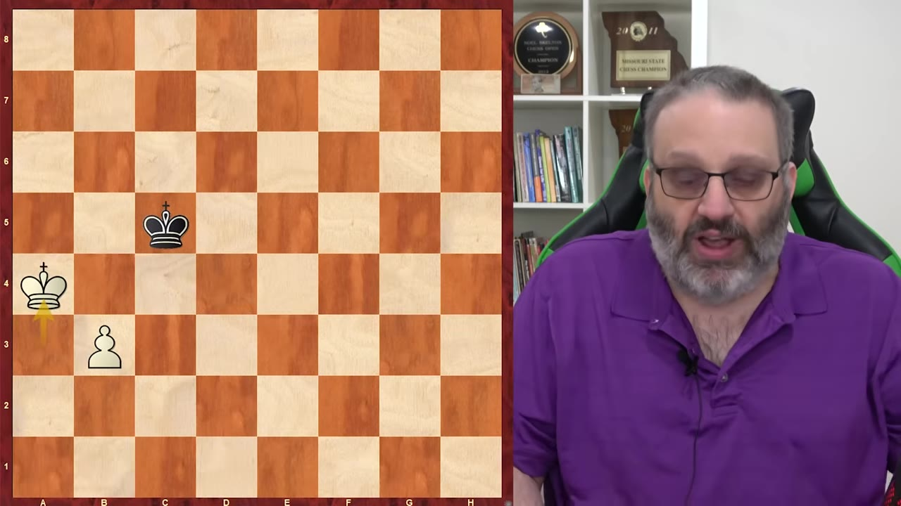
Now you're defending. White has five legal moves; only Ke1 draws. It's the distant opposition — step the king back and wait, so that whichever way black's king advances, you can oppose it. The value isn't memorizing the diagram; it's recognizing, mid-calculation, which positions are known draws and which are losses, so you steer toward the right one.
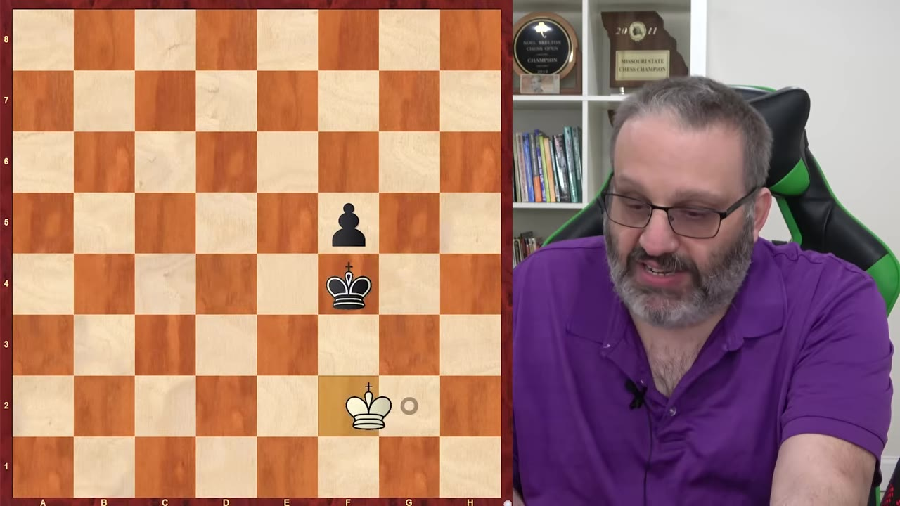
A clean rule with one exception. King on the sixth rank, in front of your pawn → you win no matter whose move it is. But with a knight- or rook-pawn (b- or g-file), there's a trap: push too fast and you stalemate the lone king in the corner. The fix is to play Ka6 first — open up the board so the king has somewhere to go — before advancing the pawn.
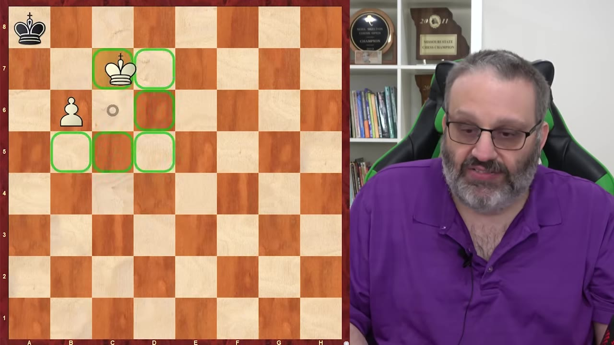
If you just have a king left, get stalemated. If your opponent has only a king left, don't stalemate them. These are half points that matter.— Ben Finegold
The closer: Finegold (Black) in a position that should be a draw — doubled pawns, his king cut off from them. He keeps moving around, offering nothing, and his opponent Faris Gabbara starts "getting cute" with rook checks and stalemate tries. Once too often: Rf3?? when taking the rook would be stalemate — except now it isn't, and Black wins. Rook lands on the wrong square, the king reaches the sixth rank, the pawn queens.
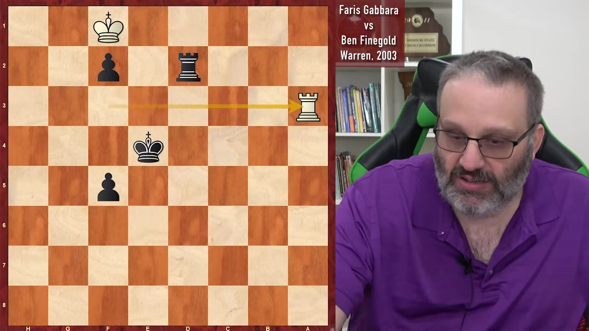
There's no reason to get cute in chess. Just play solid and play the right move. Chess is no joke.— Ben Finegold